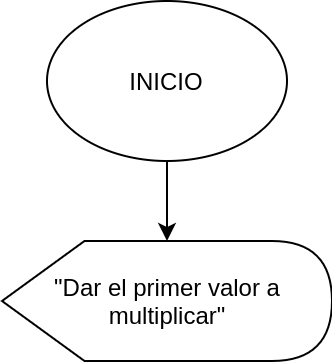
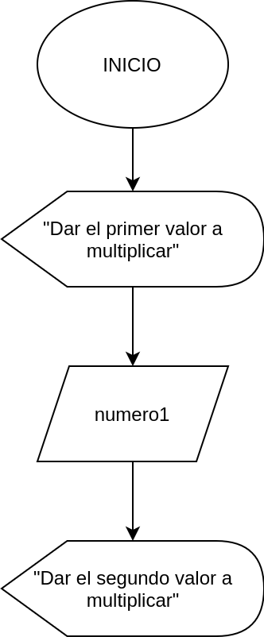

Operadores aritméticos
En esta sección veremos los operadores arítmeticos basicos que podemos encontrar en la mayoria de lenguajes.
| Nombre | Símbolo | Descripción |
|---|---|---|
| Suma | + | Realiza la operación de suma arítmetica |
| Resta | - | Realiza la operación de resta arítmetica |
| Multiplicación | * | Realiza la operación de multiplicación arítmetica |
| División | / | Realiza la operación de razón arítmetica |
| Residuo o Módulo | % | Realiza la operación de división arítmetica y devuelve el residuo de ésta división |
Cuando somos nuevos en el mundo de la programación queremos aplicar conocimiento que tenemos con relación a matemáticass, aquí existen algunas cuestiones que no se aplican de la misma manera o solo se puede aplicar de cierta forma.
Precauciones que debemos tener en cuenta son:
- El unico símbolo que podemos ocupar para la divisón es la diagonal o slash (/), no existe otro símbolo ni tampoco se puede ocupar los tradicionales que conocemos.
- El unico símbolo para multiplicación es el asterisco (*), no existe algun otro ni ninguno más sirve para multiplicar.
- Los parentesís "( )" solo agrupan y nada mas. No sirven para multiplicar.
Ejemplos:
1. Realizar la multiplicación de dos numeros que ingrese el usuario e imprimir el resultado por pantalla
Como ya sabemos debemos comenzar con nuestro símbolo de INICIO, posteriormente debemos mandar un mensaje a la pantalla indicandole al usuario lo que debe realizar. El mensaje será "Dar el primer valor a multiplicar"

Después de mandar el mensaje, debemos recibir y almacenar ese valor. Por lo tanto, usamo el símbolo de ingreso de datos y lo tenemos que almacenar en una variable. Esta variable la llamaremos numero1.

Una vez que ya tenemos el primer valor almacenado en memoria, vamos a mandar otro mensaje indicandole al usuario qué debe realizar. El mensaje será "Dar el segundo valor a multiplciar"

Siguiente paso es almacenar el dato que el usuario ingresará; lo guardaremos en una variable llamada numero2.

Ahora que ya tenemos los valores que ingreso el usuario en las variables numero1 y numero2, debemos realizar la operación matemáticas, en el símbolo de proceso u operación, este resultado guardarlo en la variable resultado.

Una vez ya tenemos el resultado de la operación dentro de la variable resultado, solo nos quedo enviarlo a la pantalla y que el usuario conozco el resultado.

Hemos terminado todas las acciones que ibas a realizar, solo nos queda terminar con el símbolo de FIN, con esto indicamos que el diagrama de flujo ha terminado su tarea.

Precedencia de operadores
La precedencia de operadores funciona practicamente igual que en matemáticas. Recordemos que solo existen 5 operaciones aritméticas básicas en la programacion (Nota: En concreto por leguaje puede variar).
| Órden | Operación | Símbolo | Descripción |
|---|---|---|---|
| 1 | Agrupación | ( ) | Los parentesis solo realizan la operación de agrupar (no arítmetica), la operación que esta en los parentesis mas profundos son las primeras que se realizan |
| 2 | Residuo | % | Obtiene el residuo de una división |
| 3 | División | / | Realiza una división arítmetica |
| 4 | Multiplicación | * | Realiza una multiplicación arítmetica |
| 5 | Suma | + | Realiza una suma arítmetica |
| 6 | Resta | - | Realiza una resta arítmetica |
Vamos a hacer una comparativa en la forma matemáticas convencional y como se realiza en diagramas de flujo o programación (esto aplica practicamente a cualquier lenguaje)
Ejemplos
| Matemáticas | Programación |
|---|---|
| \(\(4+3\)\) | 4 + 3 |
| \(\(10-3\)\) | 10 - 3 |
| \(\(5\times 5\)\) | 5 * 5 |
| \(\(\frac{3}{2}\)\) | 2 / 3 |
| $$ \frac{2 + 4}{6}$$ | ( 2 + 4 ) / 6 |
| $$ 2 + \frac{4}{3}$$ | 2 + ( 4 / 3 ) |
| \(\(\frac{x+y+z}{w}\)\) | ( x + y + z ) / w |
| \(\(x ^2\)\) | x * x |
Ejercicios
Transformar las siguientes expresiones matemáticass a una representación de digrama de flujo.
| matemáticass | Programación |
|---|---|
| \(\(x + y\)\) | |
| \(\(\frac{4 - 2}{5}\)\) | |
| \(\(3 + \frac{4}{8}\)\) | |
| \(\(6 + 4 \times \frac{3}{9}\)\) | |
| \(\(\frac{3}{7} + \frac{8}{3}\)\) |